SS2 (for AG Hefendehl): Integration
Desirée Brösamle
Dec 2021
Last updated: 2023-08-11
Checks: 6 1
Knit directory: scSeq_Hefendehl/
This reproducible R Markdown analysis was created with workflowr (version 1.7.0). The Checks tab describes the reproducibility checks that were applied when the results were created. The Past versions tab lists the development history.
Great! Since the R Markdown file has been committed to the Git repository, you know the exact version of the code that produced these results.
Great job! The global environment was empty. Objects defined in the global environment can affect the analysis in your R Markdown file in unknown ways. For reproduciblity it’s best to always run the code in an empty environment.
The command set.seed(20220131) was run prior to running
the code in the R Markdown file. Setting a seed ensures that any results
that rely on randomness, e.g. subsampling or permutations, are
reproducible.
Great job! Recording the operating system, R version, and package versions is critical for reproducibility.
Nice! There were no cached chunks for this analysis, so you can be confident that you successfully produced the results during this run.
Using absolute paths to the files within your workflowr project makes it difficult for you and others to run your code on a different machine. Change the absolute path(s) below to the suggested relative path(s) to make your code more reproducible.
| absolute | relative |
|---|---|
| /files/scSeq_Hefendehl/data/ReloadAllData_Hefendehl_Stroke_Dec | data/ReloadAllData_Hefendehl_Stroke_Dec |
| /files/scSeq_Hefendehl/data/DAM_genelists.RData | data/DAM_genelists.RData |
Great! You are using Git for version control. Tracking code development and connecting the code version to the results is critical for reproducibility.
The results in this page were generated with repository version 9d29eff. See the Past versions tab to see a history of the changes made to the R Markdown and HTML files.
Note that you need to be careful to ensure that all relevant files for
the analysis have been committed to Git prior to generating the results
(you can use wflow_publish or
wflow_git_commit). workflowr only checks the R Markdown
file, but you know if there are other scripts or data files that it
depends on. Below is the status of the Git repository when the results
were generated:
Ignored files:
Ignored: .RData
Ignored: .Rproj.user/
Ignored: data/20230203/
Ignored: data/Alignments/
Ignored: data/Cluster.markers_02-02-2023.xlsx
Ignored: data/DAM_genelists.RData
Ignored: data/DEG_control_vs_stroke.xlsx
Ignored: data/ReloadAllData_Hefendehl_Stroke_Dec'21.RData
Ignored: data/Sample_Tables/
Ignored: data/Stroke-SS2_SCT-harmony_Hefendehl.html
Ignored: data/counts.csv
Ignored: data/genecounts.csv
Ignored: data/microglia-SCT_02-02-23.rds
Ignored: data/microglia_protein.rds
Ignored: data/samples.integrated.RData
Ignored: data/seu-SCT-harmony_02-02-23.rds
Ignored: data/seu_filtered_nonorm_02-02-23.rds
Ignored: data/tx2genes.csv
Ignored: output/CrossFCplot.pdf
Ignored: output/CrossFCplot.svg
Ignored: output/integrated_analysis.RData
Ignored: output/integrated_analysis.RDataTmp
Untracked files:
Untracked: shinySecret.R
Unstaged changes:
Modified: geneviewer/Dataset.RData
Modified: geneviewer/rsconnect/shinyapps.io/molgenlab/geneviewer.dcf
Modified: wflowhelper.R
Note that any generated files, e.g. HTML, png, CSS, etc., are not included in this status report because it is ok for generated content to have uncommitted changes.
These are the previous versions of the repository in which changes were
made to the R Markdown (analysis/00_Original_Analysis.Rmd)
and HTML (docs/00_Original_Analysis.html) files. If you’ve
configured a remote Git repository (see ?wflow_git_remote),
click on the hyperlinks in the table below to view the files as they
were in that past version.
| File | Version | Author | Date | Message |
|---|---|---|---|---|
| html | 87fbacb | Andreas Chiocchetti | 2023-08-07 | Build site. |
| html | 6d3e973 | Andreas Chiocchetti | 2023-07-14 | Build site. |
| html | 982b9f6 | Andreas Chiocchetti | 2023-02-20 | Build site. |
| html | 0e20f22 | Andreas Chiocchetti | 2023-02-16 | Build site. |
| Rmd | eaa373d | Andreas Chiocchetti | 2023-02-16 | workflowr::wflow_publish(c("./docs/", "./analysis/", "./code/*", |
| html | 7764484 | achiocch | 2022-06-27 | Build site. |
| Rmd | b003c3f | achiocch | 2022-06-27 | wflow_publish(c("analysis/", "docs/", "code/*")) |
| html | 14e1ee0 | achiocch | 2022-06-27 | Build site. |
| Rmd | 5bba014 | achiocch | 2022-06-27 | wflow_publish(c("analysis/", "docs/", "code/*")) |
| html | 5bba014 | achiocch | 2022-06-27 | wflow_publish(c("analysis/", "docs/", "code/*")) |
| html | 3451e15 | achiocch | 2022-06-22 | Build site. |
| Rmd | cfbfcf6 | achiocch | 2022-06-22 | wflow_publish(c("analysis/", "docs/", "code/*")) |
| html | cfbfcf6 | achiocch | 2022-06-22 | wflow_publish(c("analysis/", "docs/", "code/*")) |
| html | faf20e9 | achiocch | 2022-05-16 | Build site. |
| html | 51b35c8 | achiocch | 2022-04-26 | Build site. |
| html | 41d6cd0 | achiocch | 2022-04-26 | Build site. |
| html | 30f02eb | achiocch | 2022-04-22 | Build site. |
| html | 9b778b1 | achiocch | 2022-04-19 | Build site. |
| html | 17114be | achiocch | 2022-04-08 | Build site. |
| html | cf395f4 | achiocch | 2022-03-30 | Build site. |
| html | c998828 | achiocch | 2022-03-30 | Build site. |
| html | 87439a3 | achiocch | 2022-02-21 | Build site. |
| html | d6f2105 | achiocch | 2022-02-21 | Build site. |
| html | 79dd0b1 | achiocch | 2022-02-21 | Build site. |
| html | ded601d | achiocch | 2022-02-03 | Build site. |
| html | 50fe211 | achiocch | 2022-02-03 | Build site. |
| html | 5fbdba4 | achiocch | 2022-02-02 | Build site. |
| Rmd | 636a117 | achiocch | 2022-02-02 | wflow_publish(c("analysis/", "docs/", "code/*")) |
| Rmd | 9044798 | Andreas Geburtig-Chiocchetti | 2022-02-02 | workflowr automated |
| html | 57c9e70 | achiocch | 2022-02-02 | adds initial html files |
| Rmd | ddb6373 | achiocch | 2022-02-02 | first commit |
Preprocessing
QC metrics from AG Hefendehl (Stroke)
# Visualize QC metrics as a violin plot
Idents(plates_hefendehl) <- "Plate"
VlnPlot(plates_hefendehl, features = c("nFeature_RNA", "nCount_RNA", "percent.mito","percent.ribo"),
group.by = "Plate", pt.size = 1, ncol = 4)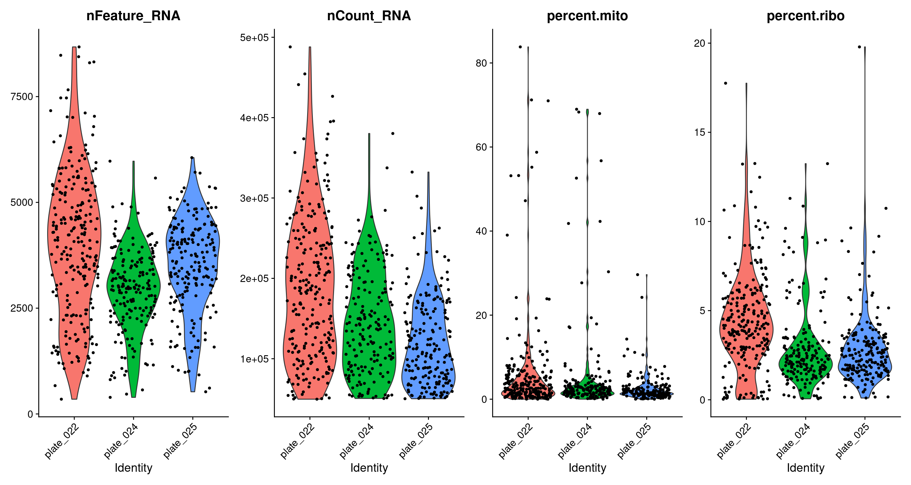
plot1 | plot2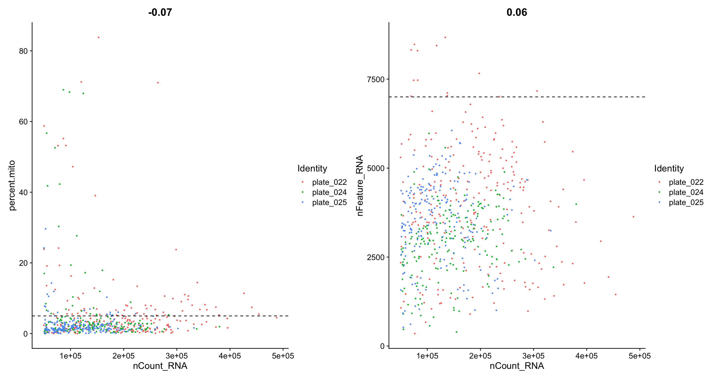
QC metrics from AG Neher (own additional WT control)
# plates_neher <- subset(plates_neher, subset = Genotype == "wt")
# Visualize QC metrics as a violin plot
Idents(plates_neher) <- "Plate"
VlnPlot(plates_neher, features = c("nFeature_RNA", "nCount_RNA", "percent.mito","percent.ribo"),
group.by = "Plate",pt.size =1, ncol = 4)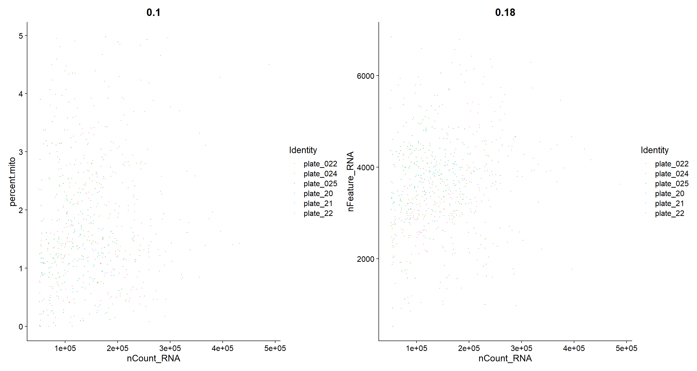
plot1a | plot2a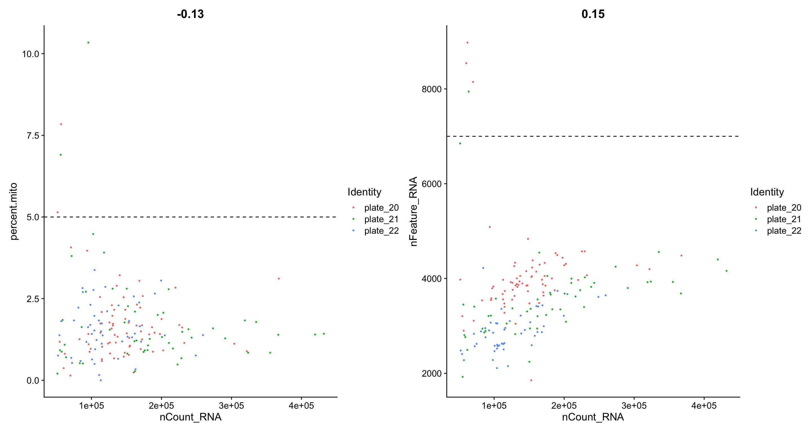
Combine both seurat objects and filter cells that have unique feature counts (gene number) over 7000 or less than 200 and cells with >5% mitochondrial counts.
QC metrics after filtering
plot3 | plot4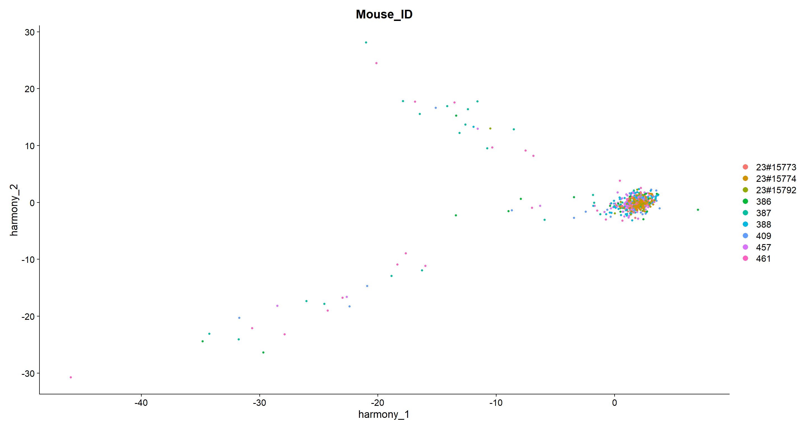
Perform integrated analysis
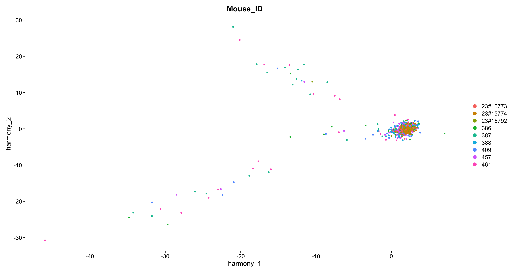
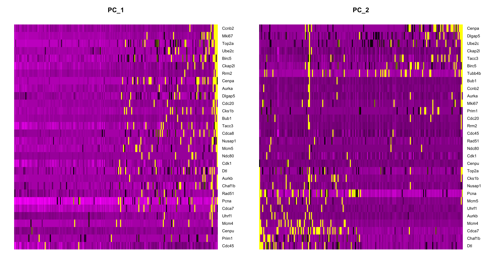
PCA, tSNE and UMAP from the first 30 dimensions and with a resolution of 0.8
# Visualization
Idents(samples.integrated) <- "seurat_clusters"
DimPlot(samples.integrated, reduction = "umap", split.by = "Treatment")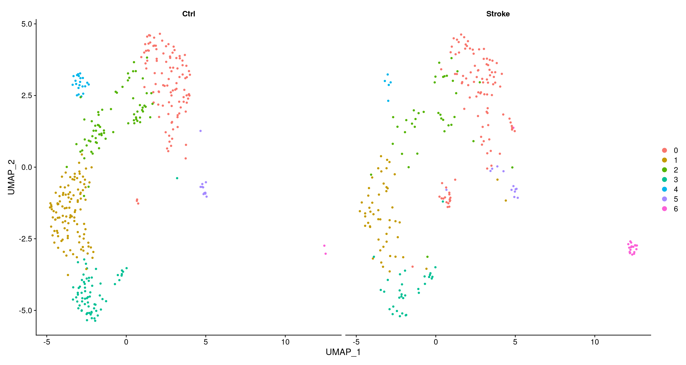
p1 + p1a + p1b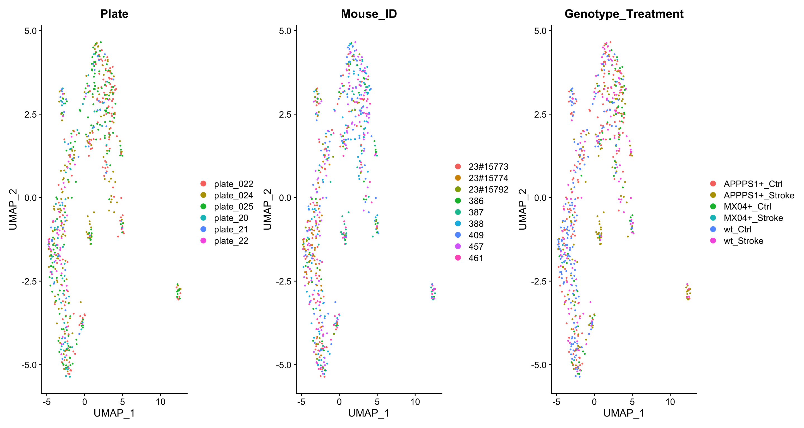
DimPlot(samples.integrated, group.by = "seurat_clusters", pt.size =1, label = T) + NoLegend()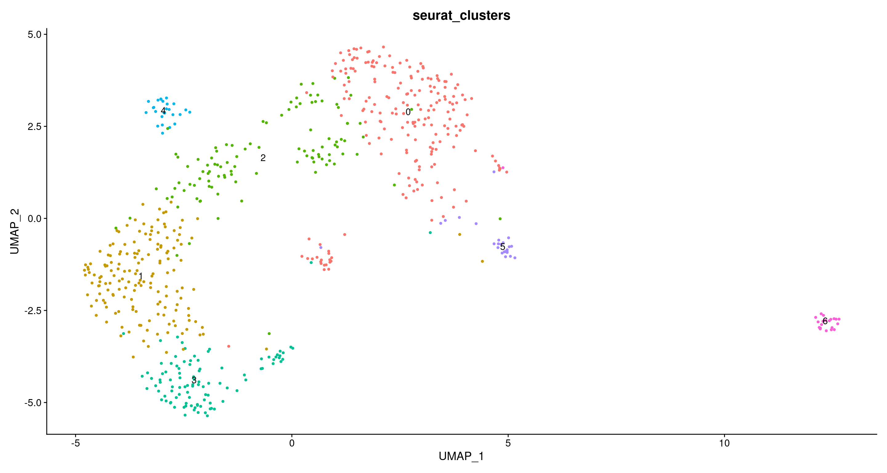
DimPlot(samples.integrated, reduction = "umap", split.by = "Plate", pt.size = 1)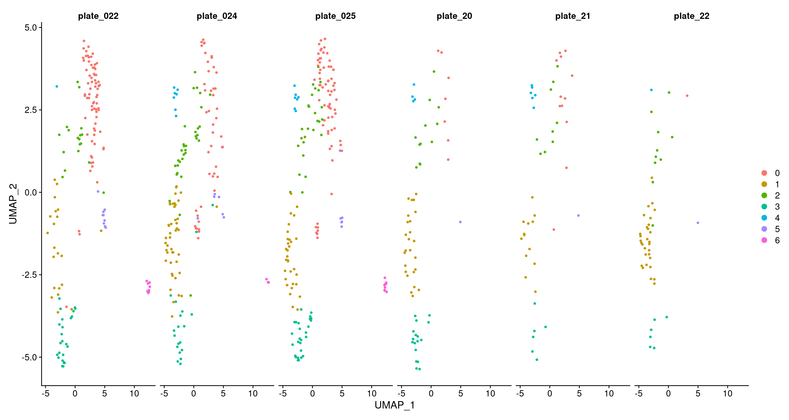
DimPlot(samples.integrated, reduction = "umap", split.by = "Genotype_Treatment", pt.size =1)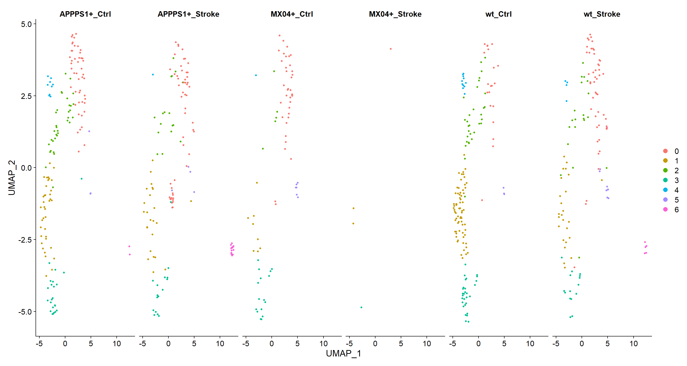
Cell cycle scoring
First, a score is assigned to each cell (Tirosh et al. 2016), based on its expression of G2/M and S phase markers. These markers should be anticorrelated in their expression levels and cells expression neither are likely not cycling and in G1 phase. Note: For downstream cell cylce regression the quantitative scores for G2/M and S phase are used, not the dicrete classification.


Cluster distribution
DimPlot(object = samples.integrated, pt.size = 1,reduction = "umap", group.by="Age",label = F) +
ggtitle("Cluster distribution according to Age") | DimPlot(object = samples.integrated, pt.size = 1,reduction = "umap", group.by="Genotype_Treatment",label = F) +
ggtitle("Cluster distribution according to Genotype + Treatment")
DimPlot(object = samples.integrated, pt.size = 1,reduction = "umap", group.by="Plate",label = F) +
ggtitle("Cluster distribution according to Plate") | DimPlot(object = samples.integrated, pt.size = 1,reduction = "umap", group.by = "seurat_clusters", label = T) +
ggtitle("Clustering")
Idents(samples.integrated) <- "seurat_clusters"
# use same colors for clusters as in plots
require(scales)
identities <- levels(samples.integrated$seurat_clusters) # Create vector with levels of object@ident
cluster_colors <- hue_pal()(length(identities)) # Create vector of default ggplot2 colors
# number of cells in each cluster
cluster_nCell <- as.data.frame.matrix(table(samples.integrated$seurat_clusters,
samples.integrated$Genotype_Age))
cluster_nCell["Total" ,] = colSums(cluster_nCell)
cluster_nCell APPPS1+_10mo APPPS1+_9mo MX04+_10mo MX04+_9mo wt_10mo wt_17mo wt_9mo
0 42 57 20 18 15 20 34
1 23 38 3 7 9 68 16
2 22 29 2 3 2 31 18
3 14 25 12 5 6 29 9
4 4 6 1 0 1 11 3
5 3 4 5 1 5 3 3
6 6 10 0 0 3 0 3
Total 114 169 43 34 41 162 86# % of cells in each cluster , grouped by genotype_Age
cluster_percent_Cell <- data.frame(round((prop.table(x = table(samples.integrated$seurat_clusters,
samples.integrated$Genotype_Age), margin = 2)*100),2))
colnames(cluster_percent_Cell) <- c("Genotype_Age", "Celltype", "Frequency")
cluster_percent_Cell Genotype_Age Celltype Frequency
1 0 APPPS1+_10mo 36.84
2 1 APPPS1+_10mo 20.18
3 2 APPPS1+_10mo 19.30
4 3 APPPS1+_10mo 12.28
5 4 APPPS1+_10mo 3.51
6 5 APPPS1+_10mo 2.63
7 6 APPPS1+_10mo 5.26
8 0 APPPS1+_9mo 33.73
9 1 APPPS1+_9mo 22.49
10 2 APPPS1+_9mo 17.16
11 3 APPPS1+_9mo 14.79
12 4 APPPS1+_9mo 3.55
13 5 APPPS1+_9mo 2.37
14 6 APPPS1+_9mo 5.92
15 0 MX04+_10mo 46.51
16 1 MX04+_10mo 6.98
17 2 MX04+_10mo 4.65
18 3 MX04+_10mo 27.91
19 4 MX04+_10mo 2.33
20 5 MX04+_10mo 11.63
21 6 MX04+_10mo 0.00
22 0 MX04+_9mo 52.94
23 1 MX04+_9mo 20.59
24 2 MX04+_9mo 8.82
25 3 MX04+_9mo 14.71
26 4 MX04+_9mo 0.00
27 5 MX04+_9mo 2.94
28 6 MX04+_9mo 0.00
29 0 wt_10mo 36.59
30 1 wt_10mo 21.95
31 2 wt_10mo 4.88
32 3 wt_10mo 14.63
33 4 wt_10mo 2.44
34 5 wt_10mo 12.20
35 6 wt_10mo 7.32
36 0 wt_17mo 12.35
37 1 wt_17mo 41.98
38 2 wt_17mo 19.14
39 3 wt_17mo 17.90
40 4 wt_17mo 6.79
41 5 wt_17mo 1.85
42 6 wt_17mo 0.00
43 0 wt_9mo 39.53
44 1 wt_9mo 18.60
45 2 wt_9mo 20.93
46 3 wt_9mo 10.47
47 4 wt_9mo 3.49
48 5 wt_9mo 3.49
49 6 wt_9mo 3.49# Grouped barchart of cell proportions
ggplot(cluster_percent_Cell, aes(fill=Genotype_Age, y=Frequency, x=Celltype)) +
geom_bar(position="dodge", stat="identity")+
ggtitle("Cell distribution according to Genotype_Age [%]") +
theme(axis.text.x = element_text(angle = 45, hjust=1, vjust=1)) +
xlab("")
# % of cells in each cluster , grouped by genotype_treatment
cluster_percent_Cell <- data.frame(round((prop.table(x = table(samples.integrated$seurat_clusters,
samples.integrated$Genotype_Treatment), margin = 2)*100),2))
colnames(cluster_percent_Cell) <- c("Genotype_Treatment", "Celltype", "Frequency")
cluster_percent_Cell Genotype_Treatment Celltype Frequency
1 0 APPPS1+_Ctrl 30.32
2 1 APPPS1+_Ctrl 23.87
3 2 APPPS1+_Ctrl 21.94
4 3 APPPS1+_Ctrl 14.84
5 4 APPPS1+_Ctrl 5.81
6 5 APPPS1+_Ctrl 1.94
7 6 APPPS1+_Ctrl 1.29
8 0 APPPS1+_Stroke 40.62
9 1 APPPS1+_Stroke 18.75
10 2 APPPS1+_Stroke 13.28
11 3 APPPS1+_Stroke 12.50
12 4 APPPS1+_Stroke 0.78
13 5 APPPS1+_Stroke 3.12
14 6 APPPS1+_Stroke 10.94
15 0 MX04+_Ctrl 50.68
16 1 MX04+_Ctrl 10.96
17 2 MX04+_Ctrl 6.85
18 3 MX04+_Ctrl 21.92
19 4 MX04+_Ctrl 1.37
20 5 MX04+_Ctrl 8.22
21 6 MX04+_Ctrl 0.00
22 0 MX04+_Stroke 25.00
23 1 MX04+_Stroke 50.00
24 2 MX04+_Stroke 0.00
25 3 MX04+_Stroke 25.00
26 4 MX04+_Stroke 0.00
27 5 MX04+_Stroke 0.00
28 6 MX04+_Stroke 0.00
29 0 wt_Ctrl 12.35
30 1 wt_Ctrl 41.98
31 2 wt_Ctrl 19.14
32 3 wt_Ctrl 17.90
33 4 wt_Ctrl 6.79
34 5 wt_Ctrl 1.85
35 6 wt_Ctrl 0.00
36 0 wt_Stroke 38.58
37 1 wt_Stroke 19.69
38 2 wt_Stroke 15.75
39 3 wt_Stroke 11.81
40 4 wt_Stroke 3.15
41 5 wt_Stroke 6.30
42 6 wt_Stroke 4.72# Grouped barchart of cell proportions
ggplot(cluster_percent_Cell, aes(fill=Genotype_Treatment, y=Frequency, x=Celltype)) +
geom_bar(position="dodge", stat="identity")+
ggtitle("Cell distribution according to Genotype_Treatment [%]") +
theme(axis.text.x = element_text(angle = 45, hjust=1, vjust=1)) +
xlab("")
Cell type identification
Finding differentially expressed features (cluster biomarkers)
Idents(samples.integrated) <- samples.integrated$seurat_clusters
DoHeatmap(samples.integrated, features = top20$gene) + NoLegend() + ggtitle("Top20 cluster marker genes")
SingleR
SingleR is an automatic annotation method for (scRNAseq) data (Aran et al. 2019). Given a reference dataset of samples (single-cell or bulk) with known labels, it labels new cells from a test dataset based on similarity to the reference set. Here we use the built-in references “Immgen” (830 microarray samples of sorted hematopoetic and immune cell populations) and “Mouse RNA-Seq” (358 non-specific mouse RNA-seq samples).
Immgen reference
Section Skipped as pred.immgen object is not available
MouseRNA-Seq reference Section Skipped as pred.mouseRNA object is not available
# number of cells in each cluster
cluster_nCell <- data.frame(table(samples.integrated$MouseRNASeq_sc_labels,samples.integrated$Genotype_Treatment))
colnames(cluster_nCell) <- c("Genotype_Treatment", "MouseRNASeq_sc_labels", "Number")
#cluster_nCell["Total" ,] = colSums(cluster_nCell)
# cluster_nCell
# % of cells in each cluster
cluster_percent_Cell <- data.frame(round((prop.table(x = table(samples.integrated$MouseRNASeq_sc_labels,
samples.integrated$Genotype_Treatment), margin = 2)*100),2))
colnames(cluster_percent_Cell) <- c("Genotype_Treatment", "MouseRNASeq_sc_labels", "Frequency")
# cluster_percent_Cell
# Grouped barchart of absolute cell numbers
ggplot(cluster_nCell, aes(fill=Genotype_Treatment, y=Number, x=MouseRNASeq_sc_labels)) +
geom_bar(position="dodge", stat="identity") +
ggtitle("Cell distribution according to MouseRNASeq reference (absolut values)") +
theme(axis.text.x = element_text(angle = 45, hjust=1, vjust=0.5)) +
xlab("")
# Grouped barchart of cell proportions
ggplot(cluster_percent_Cell, aes(fill=Genotype_Treatment, y=Frequency, x=MouseRNASeq_sc_labels)) +
geom_bar(position="dodge", stat="identity")+
ggtitle("Cell distribution according to MouseRNASeq reference [%]") +
theme(axis.text.x = element_text(angle = 45, hjust=1, vjust=0.5)) +
xlab("")
# number of cells in each cluster
cluster_nCell <- data.frame(table(samples.integrated$Immgen_sc_labels,samples.integrated$Treatment))
colnames(cluster_nCell) <- c("Treatment", "Immgen_sc_labels", "Number")
#cluster_nCell["Total" ,] = colSums(cluster_nCell)
# cluster_nCell
# % of cells in each cluster
cluster_percent_Cell <- data.frame(round((prop.table(x = table(samples.integrated$Immgen_sc_labels,
samples.integrated$Treatment), margin = 2)*100),2))
colnames(cluster_percent_Cell) <- c("Treatment", "Immgen_sc_labels", "Frequency")
# cluster_percent_Cell
# Grouped barchart of absolute cell numbers
ggplot(cluster_nCell, aes(fill=Treatment, y=Number, x=Immgen_sc_labels)) +
geom_bar(position="dodge", stat="identity") +
ggtitle("Cell distribution according to Immgen reference (absolut values)") +
theme(axis.text.x = element_text(angle = 45, hjust=1, vjust=0.5)) +
xlab("")
# Grouped barchart of cell proportions
ggplot(cluster_percent_Cell, aes(fill=Treatment, y=Frequency, x=Immgen_sc_labels)) +
geom_bar(position="dodge", stat="identity")+
ggtitle("Cell distribution according to Immgen reference [%]") +
theme(axis.text.x = element_text(angle = 45, hjust=1, vjust=0.5)) +
xlab("")
Renaming Clusters
DimPlot(samples.integrated, reduction = "umap", label=T) + NoLegend()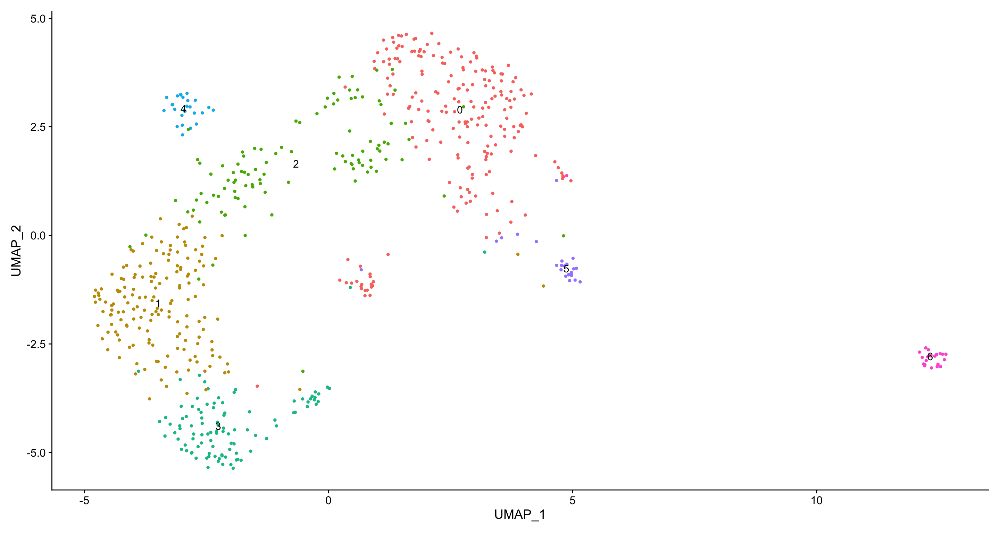
Zoom into Microglia clusters
A second Seurat cluster is generated, where all non-microglial immune cells are removed according to the mouseRNASeq_sc_labels.
p3 + p3a
DAMs (Cell. 2017 Jun 15;169(7):1276-1290.e17. doi: 10.1016/j.cell.2017.05.018)
DAM plotting

p5 | p5aWarning: Use of `expr_df[[axes[1]]]` is discouraged.
ℹ Use `.data[[axes[1]]]` instead.Warning: Use of `expr_df[[axes[2]]]` is discouraged.
ℹ Use `.data[[axes[2]]]` instead.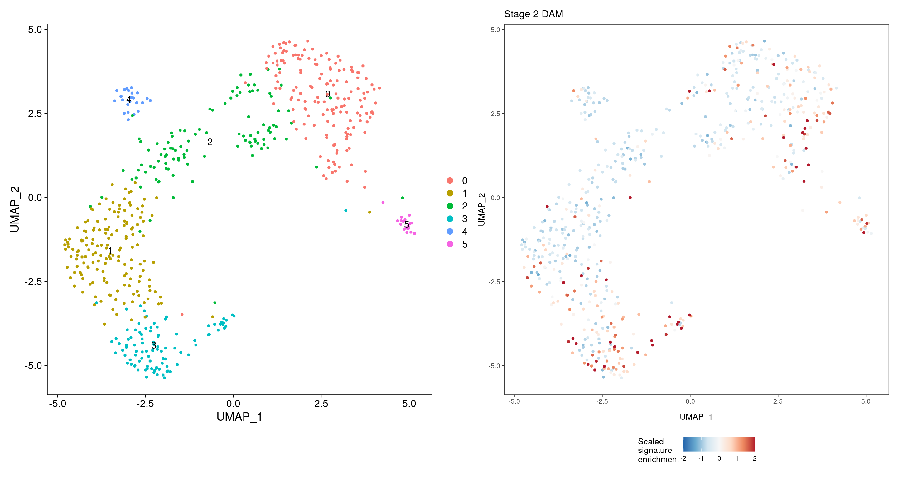
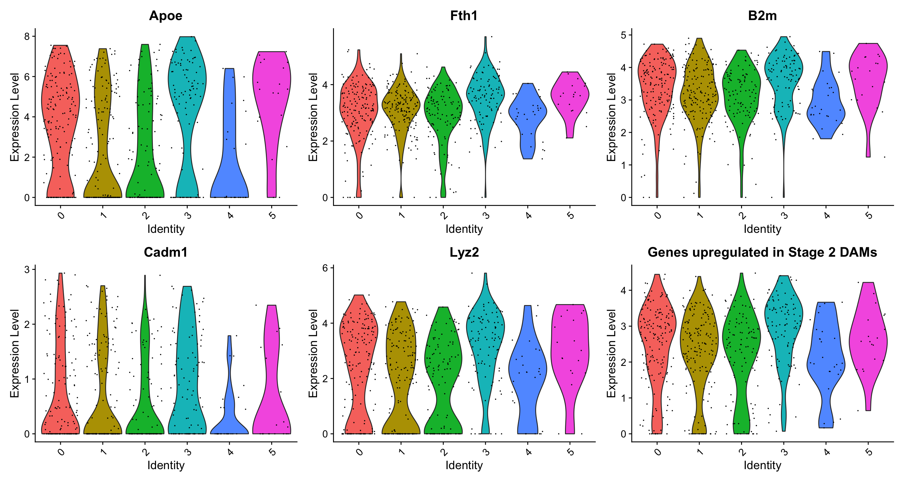
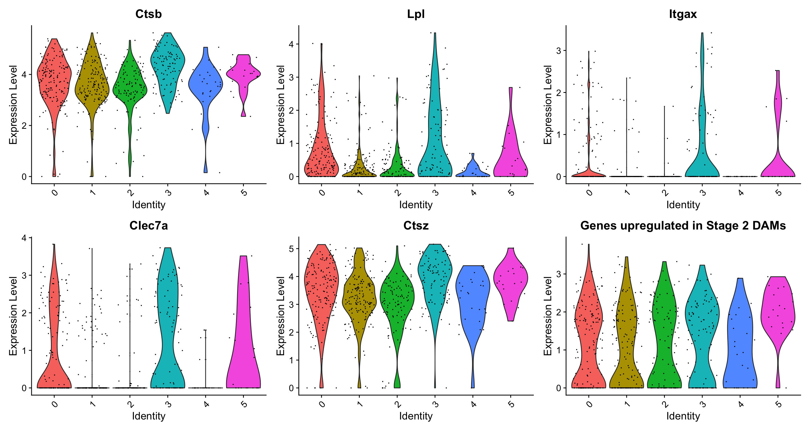
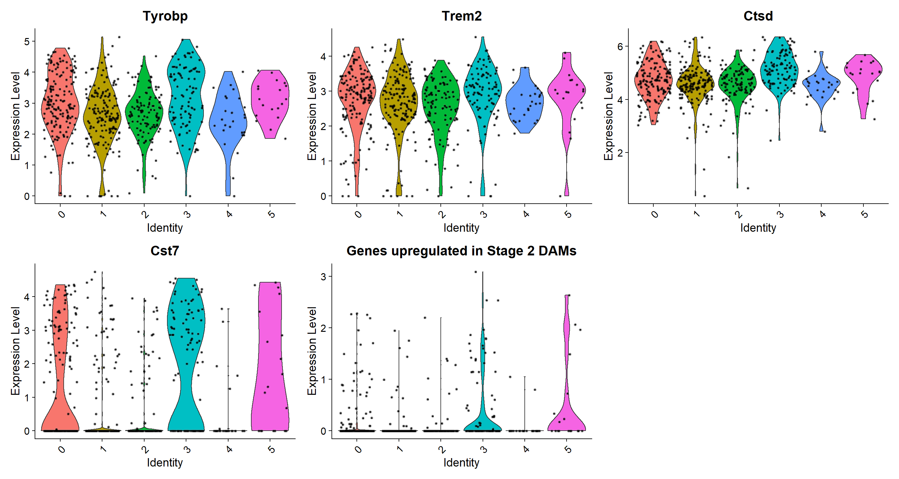
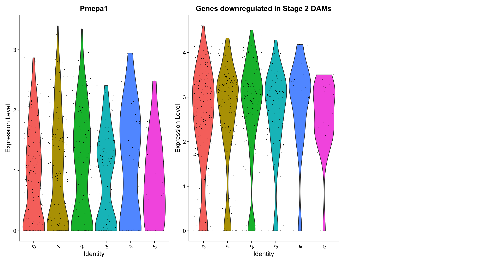
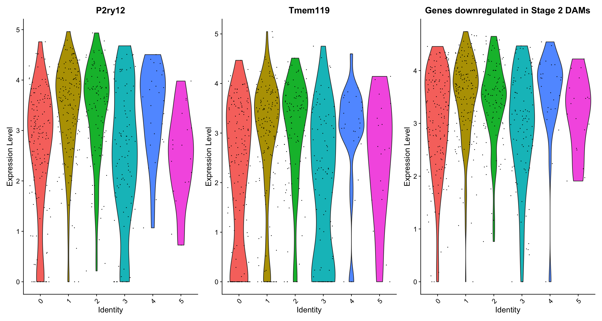
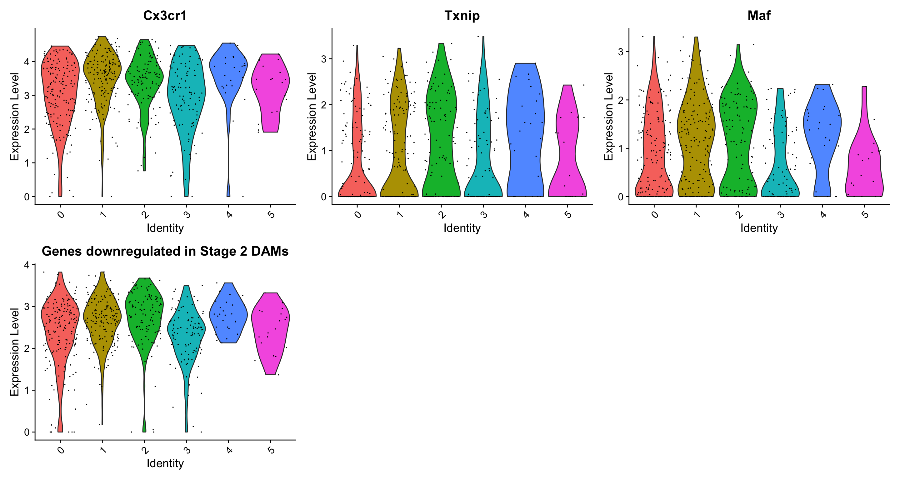
Renaming clusters
Idents(microglia) <- "Celltype"
DimPlot(microglia, reduction = "umap", label = TRUE, pt.size = 1)+ NoLegend()
save(list=c("DAM_up", "DAM_down","Stage2_DAM_down", "Stage2_DAM_up",
"DAM2_up_1", "DAM2_up_2", "DAM2_up_3", "DAM2_down_1", "DAM2_down_2","DAM2_down_3"), file = "/files/scSeq_Hefendehl/data/DAM_genelists.RData")Signature enrichment
DEGs and GSEA between microglia of different genotypes
WT vs App
WT vs MX04+
MX04+ vs App
DEGs and GSEA of microglia of different genotype and treatment
WT_Ctrl vs WT_Stroke
APP_Ctrl vs APP_Stroke
WT_Ctrl vs APP_Ctrl
WT_Stroke vs APP_Stroke
DEGs and GSEA of each cluster
Microglia_0
Only works if ReloadAllData_Harmony_Hefendehl_Stroke.RData is loaded. Otherwise, an error message will occur.
Microglia_1
Microglia_2
Microglia_4
DAM
Microglia_5
Only works if ReloadAllData_Harmony_Hefendehl_Stroke.RData is loaded. Otherwise, an error message will occur.
Genotype + Treatment comparison in each cluster
Microglia_0
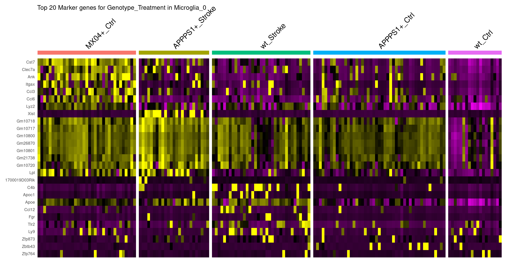
Microglia_1
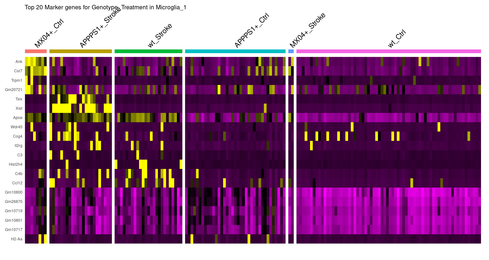
Microglia_2
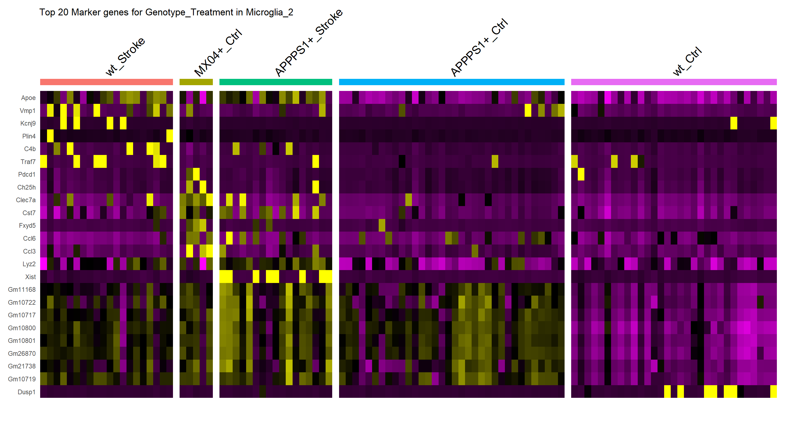
DAM?
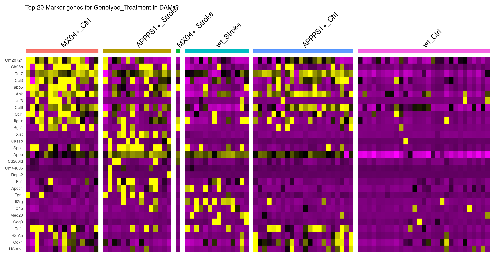
Microglia_4
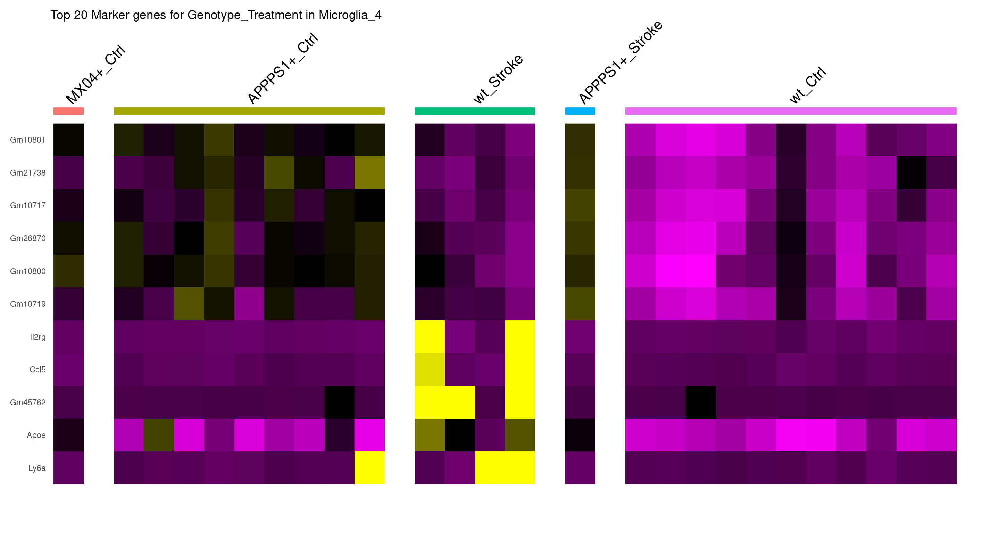
Microglia_5
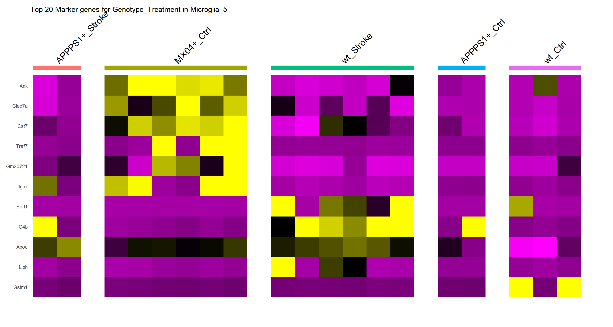
sessionInfo()R version 4.2.2 (2022-10-31)
Platform: x86_64-pc-linux-gnu (64-bit)
Running under: Ubuntu 22.04.1 LTS
Matrix products: default
BLAS: /usr/lib/x86_64-linux-gnu/blas/libblas.so.3.10.0
LAPACK: /usr/lib/x86_64-linux-gnu/lapack/liblapack.so.3.10.0
locale:
[1] LC_CTYPE=en_US.UTF-8 LC_NUMERIC=C
[3] LC_TIME=en_US.UTF-8 LC_COLLATE=en_US.UTF-8
[5] LC_MONETARY=en_US.UTF-8 LC_MESSAGES=en_US.UTF-8
[7] LC_PAPER=en_US.UTF-8 LC_NAME=C
[9] LC_ADDRESS=C LC_TELEPHONE=C
[11] LC_MEASUREMENT=en_US.UTF-8 LC_IDENTIFICATION=C
attached base packages:
[1] stats4 stats graphics grDevices utils datasets methods
[8] base
other attached packages:
[1] scales_1.2.1 pheatmap_1.0.12
[3] EnhancedVolcano_1.16.0 ggrepel_0.9.3
[5] SingleR_2.0.0 SummarizedExperiment_1.28.0
[7] Biobase_2.58.0 GenomicRanges_1.50.2
[9] GenomeInfoDb_1.34.9 IRanges_2.32.0
[11] S4Vectors_0.36.1 BiocGenerics_0.44.0
[13] MatrixGenerics_1.10.0 matrixStats_0.63.0
[15] ggplot2_3.4.1 SeuratObject_4.1.3
[17] Seurat_4.3.0 workflowr_1.7.0
loaded via a namespace (and not attached):
[1] plyr_1.8.8 igraph_1.4.0
[3] lazyeval_0.2.2 sp_1.6-0
[5] splines_4.2.2 BiocParallel_1.32.5
[7] listenv_0.9.0 scattermore_0.8
[9] digest_0.6.31 htmltools_0.5.4
[11] fansi_1.0.4 magrittr_2.0.3
[13] ScaledMatrix_1.6.0 tensor_1.5
[15] cluster_2.1.4 ROCR_1.0-11
[17] globals_0.16.2 spatstat.sparse_3.0-0
[19] colorspace_2.1-0 xfun_0.37
[21] dplyr_1.1.0 callr_3.7.3
[23] RCurl_1.98-1.10 jsonlite_1.8.4
[25] progressr_0.13.0 spatstat.data_3.0-0
[27] survival_3.5-3 zoo_1.8-11
[29] glue_1.6.2 polyclip_1.10-4
[31] gtable_0.3.1 zlibbioc_1.44.0
[33] XVector_0.38.0 leiden_0.4.3
[35] DelayedArray_0.24.0 BiocSingular_1.14.0
[37] future.apply_1.10.0 abind_1.4-5
[39] spatstat.random_3.1-3 miniUI_0.1.1.1
[41] Rcpp_1.0.10 viridisLite_0.4.1
[43] xtable_1.8-4 reticulate_1.28
[45] rsvd_1.0.5 htmlwidgets_1.6.1
[47] httr_1.4.4 RColorBrewer_1.1-3
[49] ellipsis_0.3.2 ica_1.0-3
[51] farver_2.1.1 pkgconfig_2.0.3
[53] sass_0.4.5 uwot_0.1.14
[55] deldir_1.0-6 utf8_1.2.3
[57] labeling_0.4.2 tidyselect_1.2.0
[59] rlang_1.0.6 reshape2_1.4.4
[61] later_1.3.0 munsell_0.5.0
[63] tools_4.2.2 cachem_1.0.6
[65] cli_3.6.0 generics_0.1.3
[67] ggridges_0.5.4 evaluate_0.20
[69] stringr_1.5.0 fastmap_1.1.0
[71] yaml_2.3.7 goftest_1.2-3
[73] processx_3.8.0 knitr_1.42
[75] fs_1.6.1 fitdistrplus_1.1-8
[77] purrr_1.0.1 RANN_2.6.1
[79] sparseMatrixStats_1.10.0 pbapply_1.7-0
[81] future_1.31.0 nlme_3.1-162
[83] whisker_0.4.1 mime_0.12
[85] ggrastr_1.0.1 compiler_4.2.2
[87] rstudioapi_0.14 beeswarm_0.4.0
[89] plotly_4.10.1 png_0.1-8
[91] spatstat.utils_3.0-1 tibble_3.1.8
[93] bslib_0.4.2 stringi_1.7.12
[95] highr_0.10 ps_1.7.2
[97] lattice_0.20-45 Matrix_1.5-3
[99] vctrs_0.5.2 pillar_1.8.1
[101] lifecycle_1.0.3 spatstat.geom_3.0-6
[103] lmtest_0.9-40 jquerylib_0.1.4
[105] RcppAnnoy_0.0.20 data.table_1.14.6
[107] cowplot_1.1.1 bitops_1.0-7
[109] irlba_2.3.5.1 httpuv_1.6.9
[111] patchwork_1.1.2 R6_2.5.1
[113] promises_1.2.0.1 KernSmooth_2.23-20
[115] gridExtra_2.3 vipor_0.4.5
[117] parallelly_1.34.0 codetools_0.2-19
[119] MASS_7.3-58.2 rprojroot_2.0.3
[121] withr_2.5.0 sctransform_0.3.5
[123] GenomeInfoDbData_1.2.9 parallel_4.2.2
[125] beachmat_2.14.0 grid_4.2.2
[127] tidyr_1.3.0 DelayedMatrixStats_1.20.0
[129] rmarkdown_2.20 Rtsne_0.16
[131] git2r_0.31.0 getPass_0.2-2
[133] spatstat.explore_3.0-6 shiny_1.7.4
[135] ggbeeswarm_0.7.1